全部模组MODS
每个模组有自己的目录，点进去只看这个模组的东西。想看某个模组的全部物品，进它自己的目录。
已收录 196 个模组
Create: Steam 'n' Railsrailways
把 Create 的列车做成真正能开的一套铁路系统
Create: Foodcreatefood
基于 农夫乐事 、 机械动力 和原版已有的食材体系所制作的食物拓展…
Create: Garnishedgarnished
此 Mod 适用于 Fabric & Forge！（暂不提供对…
Create: Tank Defensescreate_tank_defenses
机械动力：坦克防御（CTD）新增了许多装甲块以便玩家保护好自己的基地…
机械动力 · Createcreate
本体图鉴：740 个物品与方块、1302 条配方、116 段官方 Ponder
NeoKuayuekuayue
经过一年多的紧张重置与开发，新版本的跨越将带着全新架构、全新内容…
Create: The Factory Must Growtfmg
808 件工业零件，把产线做到真正的工厂规模
Create Encasedcreatecasing
528 件把传动件装进各种外壳的变体
Create: Design n' Decordesign_decor
488 件成套的工业风建筑装饰
Create Decocreatedeco
给机械动力补 400 多件成套的建筑装饰方块
Create: Northstar - Reduxnorthstar
此模组为 机械动力：北极星 的高版本重制版，添加了对于…
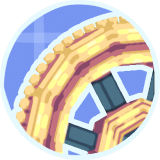
Create: Dreams & Desirescreate_dd
372 件把机械动力扩成一整套世界
Create: Northstarnorthstar
受 Micdoodle 的 Galacticraft 的启发…
Create: Love & Warcreateloveandwar
Create: Love & War 是一个以 机械动力…
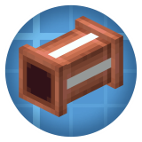
Create: Pipe Networkspipe_networks
Create: Pipe Networks 是 机械动力…
Create Weaponrycreate_wt
MC 1.19.2 版本需额外下载 Create…
Create: Vintage Improvementsvintageimprovements
Create: Vintage Improvements…
Greategreate
目前还未完成机器/配方分级系统（配方要求的最小机器等级…
Create: Metalworkcreatemetalwork
该模组基于 Kaupenjoe 的模板 制作，流体代码来自…
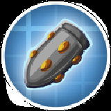
Create Big Cannonscreatebigcannons
用机械动力的应力驱动一整套火炮
Create: Train Utilities附属模组
Create Militarizedcreate_militarized_
新设备：Coke Furnace、Supercomputer…
[TACZ] Create: Precise Manufacturingprma
一个给 永恒枪械工坊：零 中的物品和武器添加了可自动化配方的…
Quality Railwayqr
135 件把铁路做成完整交通系统
CBC: Modern Warfarecbcmodernwarfare
把机械动力火炮推向现代战争
Create: Unifyunify
Create: Unify 旨在帮助统一一些大多数模组中常见的材料…
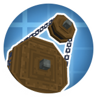
Create: Bits 'n' Bobsbits_n_bobs
133 件装饰与零件小物
Create: Klinks n' Klangscreate_klinks_n_klangs
叮当声与撞击声：机械动力的音效与装饰件
Create: Metallurgycreatemetallurgy
机械动力：冶金学是 Luc_Creeper74 开发的 机械动力…
Create: Dragons Pluscreate_dragons_plus
116 件龙与魔法方向的扩展
Create: Clockworkvs_clockwork
把机械动力搬到天上，做成可驾驶的飞行器
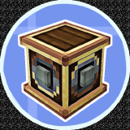
Create: Connectedcreate_connected
把机械动力里缺的那批连接与传动件补齐
Create: Cobblemon Industrializedcreate_cobblemon
这个 Mod 为 机械动力 添加了更多有关 方块宝可梦 的物品制作配方
Create: Diesel Generatorscreatedieselgenerators
用柴油链给中后期供能
Create: Misc and Thingscreate_things_and_misc
143 件杂项零件，补 Create 本体的空白
Create Nuclearcreatenuclear
机械动力：原子核动（Create Nuclear）…
Create: Protection Pixelprotection_pixel
机素防护（Protection Pixel）为玩家带蒸汽朋克风格的护…
Create Planetary Tweakscp_tweaks
黄铜和锌制工具，模组没有添加锭本身，只有在加载了 机械动力…
CBC: Chemical Warfarecbc_cw
机械动力火炮：化学与生物战争模组新增多种化学试剂，基于 CBC…
Create: Biotech - 机械动力：生物科技create_biotech
机械动力：生物科技是一个给机械动力增加“生物零件”的附属模组…
Create: Rainbow Compoundrainbowcompound
88 件彩虹系材料与机器
Create Confectionerycreate_confectionery
87 件把甜食做成自动化产线
Create: Ironworkscreate_ironworks
Create： Ironworks 通过 机械动力…
Create Stuff 'N Additionscreate_sa
80 件机器与工具扩展
Create: More Featurescreate_more_features
给机械动力补一批零件与功能方块
Create Chromatic Returncreatechromaticreturn
Create Chromatic Return 附属模组
Frequency Createfrequency
Frequency for Create…
Create: Bitterballencreate_bic_bit
A：荷兰小炸球是一种荷兰料理，由肉类裹上面糊后揉成球状后油炸而成…
Create: Lights & Controlscreate_lac
一个 机械动力 的附属模组，提供了完整的光源方块…
Lijm's Expanselijms_expanse
Lijm’s Expanse 为 Minecraft…
Create: Extended Cogwheelsextendedgears
70 种尺寸的齿轮，补全传动比
Create: Liberate
把「战略配备」搬进机械动力：卡、装备、地狱炸弹
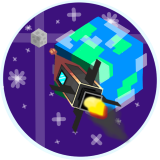
Creating Spacecreatingspace
类似于 高级火箭 模组（而不是航天学），它使用动态结构来实现火箭
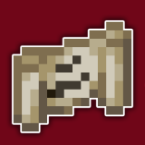
Create: Molten Metalsmolten_metals
你的心里是否也有一个被匠魂凿出的洞？为什么不把它填满融化的铅呢？本模…
Create: Sweets & Treats附属模组
Create: Train Decotraindeco
目前正在测试阶段，且更新不一定很快
Create: Armorycreatearmory
65 件用机械动力造军械
Create: Propulsioncreatepropulsion
给机械动力加一套飞行器：推进器、机翼、线缆、光学镜头
Create: Numismaticsnumismatics
113 件货币与自动售货系统
Dreams & Desires附属模组
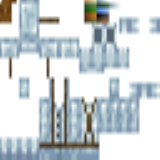
Create: Clothescreateclothes
这个模组新增了适用于所有生物群系的迷彩军装变体…
Rechiseled: Createrechiseledcreate
57 件可凿刻的材质变体
Create Mechanical Spawnercreate_mechanical_spawner
[JEI] JEI 物品管理器 (Just Enough…
Create Ratatouilleratatouille
本模组是机械动力的一个附属，旨在为农业种植…
Create Crafts & Additionscreateaddition
把 Create 的动能接进电力系统
Create: Deepfriedcreate_deepfried
Create: Deepfried 附属模组
Create: Interiorsinteriors
63 件可坐可用的家具
Create: New Agecreate_new_age
让机械动力的应力与电力互相转换
Create: Quality of Lifecreateqol
78 件补足日常操作的小工具
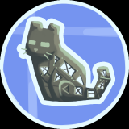
Create: Copycats+copycats
用任意材质伪装成任意形状的方块
Create: Enchantment Industry附属模组
Alloyedalloyed
37 件钢铁与合金冶炼
Create: Armored Railscreate_armored_rails
没有车体时，列车仍拥有基础生命值，但有了车体后，你将获得 9…
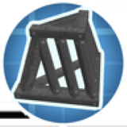
Create: Bells & Whistlesbellsandwhistles
36 件小装饰，专治场景空旷
Compressed Creativitycompressedcreativity
35 件压缩空气驱动装置
Create ReAutomatedcreatereautomated
自动化零件的另一套做法
Create: Ornithopter Glidercreateornithopterglider
Ornithopter Glider 是一款自定义滑翔翼模组…
Kinetic Pixelkinetic_pixel
用 Create 产线造火器：枪管、激发器、各种弹药
Create: More Drill Headscreatemoredrillheads
同时添加了附魔效果钻头，可以使用机械手为本 Mod 钻头安装红石粉…
Create: TaCZ Automationcreatetaczauto
作者不允许在 非 CurseForge 或 Modrinth…
Create: Crystal Clearcrystal_clear
32 件玻璃与透明建材
Create: More Seatscms
给列车和结构补一批可坐的座椅
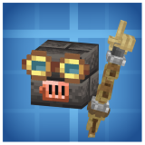
Tinkers' Gearstgears
匠械 是一个专门面向 机械动力 与 匠魂 3 的联动模组…
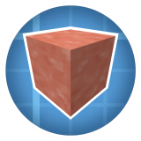
Create: Meat Blocksmeatblocks
把肉做成方块：可切片、可压缩、可烤
Create: Modern Train Partsmoderntrainparts
Create: Modern Train Parts…
Create: Central Kitchencreate_central_kitchen
把农夫乐事的菜谱接成自动化产线
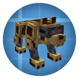
Create: Mechanical Companioncreatemechanicalcompanion
召唤机械狼的方法： 在 Curios 的头饰栏中装备 “…
Create: pneumatic equipmentcreate_pneuequip
当它们的耐久耗尽以后，仅有 Chisel 与 Chain Saw…
Create: Ethium Reimaginedethium_reimagined
本模组添加了一种新材料——Ethium，玩家需要使用工作盆和搅拌机…
Create: Steam Poweredsteampowered
26 件蒸汽动力设备
Create: Totem Factorytotemfactory
依次使用动力锯和动力辊压机来处理黄铜板制得头部外壳…
Create: Radarscreate_radar
用应力驱动的雷达与自动探测
Create: Teleporterscreateteleporters
47 件用动力驱动的传送装置
Create: Basic Additionscreate_basic_additions
26 件基础级补件
Create: Escalatedescalated
自动扶梯：把传送带变成会走的楼梯
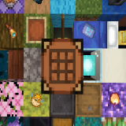
So crazy tryso_crazy_try
模组永远不会支持 Fabric，若需要 Fabric 版本请安装…
Create Opticalcreate_optical
Create Optical 附属模组
Create: Fantasizing Againcreate_fantasizing
方块放置器 ：一个可以在极远的距离放置方块并立即摧毁方块的工具（曾经…
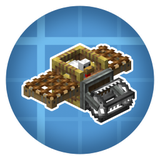
Create: Integrated Farmingcreate_integrated_farming
鸡鸭鹅的自动化养殖：栖架、渔网、真空收割
Create: More Sandpaperscreatesandpapers
Create: More Sandpapers 附属模组
Trackworktrackwork
驱动工艺（Trackwork） 是 瓦尔基里天空 和 机械动力…
Create Goggles附属模组data/creategoggles/recipes
Ars Technicaars_technica
Ars Technica 附属模组
Create: Nuka Cola Classiccreate_nuka_cola_classic
你可以使用机械动力中的设备，以 火把花 和 甜浆果…
Create Ore Excavationcreateoreexcavation
把矿脉变成可自动化的无限产线
Create Saberscreate_sabers
光剑据剑柄材料可分为 黄铜 、 铜 、 锌…
Create: Applied Kineticscreateappliedkinetics
添加了 能量传输器 （Energy Provider）…
Create: Bread and Beyondcreate_bread_and_beyond
面包、肉饼、芝士与下界三明治
Create: Molten Ventsmolten_vents
12 件可再生的熔岩喷口
Create Railways Navigatorcreaterailwaysnavigator
给铁路系统加一块实时导航屏
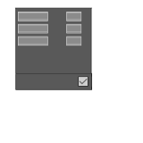
Create: Compact Transmissioncreate_compact_transmission
档位：R、N、1、2、3、4；它带有 GUI，可用于调整除 N…
Create: Screw It!screwnstuff
螺丝、钉子、支架：把方块真正拧在一起
Petrol's Partspetrolsparts
应大众需求，在 v0.1.0 后， Destroy…
Create: Cardboard Thingscreatecardboardthings
本模组是 机械动力 附属，受到机械动力的 纸棍 启发，本附属添加了…
Create: Unbreakable Toolscreate_unbreakable_tools_series
九件不毁下界合金工具
Create Blue Skies Compatcreate_blue_skies_compat
新增 6 种矿石的粉碎产物（ 镰鼬矿石 、 炙铁矿石 、 缪铁矿石…
Create: Aquatic Ambitionscreate_aquatic_ambitions
机械动力 的附属 Mod，引入一种全新的 鼓风机批量加工…
Create: Artificial Meat
Create: Copies & Catscopiescats
8 件伪装与猫咪小物
Create: Extend Bogeysextendedbogeys
Create: Extend Bogeys 为 机械动力…
Create: Extra Gaugesextra_gauges
机械动力：更多仪表 是 机械动力 的一个附属模组…
More Create Burnersmoreburners
机械动力：更多燃烧室 是一个 机械动力 的附属，该 Mod…
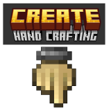
Create Hand Crafting - 1.18.2 - 1.20.1create_hc
本模组为 HardRock Tools & Materials 与…
Create: Sentry Mechanical Armsentrymechanicalarm
此模组为 机械动力 添加了哨戒动力臂，基于 Create…
Create: Wizardrycreate_wizardry
本模组是一个 机械动力 的附属模组，为其添加了与…
Simulated Coasterssimulatedcoasters
过山车轨道与车厢，接 Create 的机械结构
Create Siftingcreatesifter
6 件动力筛矿
Create: Apokineticsapokinetics
欢迎来到 Create: Apokinetics…
Create: Extended Wrenchesextendedwrenches
Extended Wrenches 模组允许你自定义 机械动力…
Create: Factory Controllercreatefactorycontroller
机械动力：工厂控制台附属为机械动力的包裹物流提供了一个全新的集成自动…
Create: Hypertubescreate_hypertube
你有没有想过在 Minecraft 中建立像…
Create: Nukecreate_nuke
Create: Nuke 附属模组
CC:C Bridgecccbridge
这个模组为 机械动力 与 CC:Tweaked 和…
Create Guardian Beam Defensecreategbd
这个 Mod 添加了一些以 海底神殿 为主题的防御塔…
Create Slice & Dicesliceanddice
5 件把切菜做成自动化
Create Stuff & Netherite Additionscreate_nj
Create Stuff & Netherite…
Create: Interactivecreate_interactive
借助此模组，你可以以前所未有的方式与你的机械动力动态结构互动！所有的…
Create: Let The Adventure Begincreate_ltab
Create: Let The Adventure Begin…
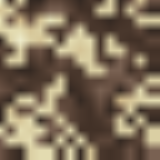
Create: Netherlesscreate_netherless
这个 MC 模组是专为 机械动力 设计的一个附属…
Create: Remote Terminalcreateterminal
机械动力：远程终端 模组添加了一款手持物品，允许玩家在最远 20…
Create: Tools n Weaponscreate_tools_n_weapons
这个模组添加了一套新工具，风格与 机械动力 保持一致…
Deep Spacedeep_space
Deep Space 附属模组
Extreme Reactors Create Compater2create
Extreme Reactors Create Compat 附属模组
Tofu Createtofucreate
这个模组为 豆腐工艺重制版 添加了基于 机械动力 的豆腐与豆奶配方
Create Jetpackcreate_jetpack
26 件用压缩空气飞的喷气背包
Create for twinks附属模组
Create: Ender Transmissioncreateendertransmission
4 件跨维度传动
Create: Mobile Packagescreate_mobile_packages
此模组拓展了 机械动力 的物流系统，添加了运送机械动力 包裹…
Create: Power Loadercreate_power_loader
4 件跨区块的动力传输器
Create: Unbreakable Armorcreate_unbreakable_armor
把下界合金盔甲做成永不磨损
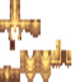
Create: Upgraded Armorcreate_upgraded_armor
Create Ugraded 在下界合金之后又增加了一系列坚固的盔甲
Expanding Technologiesexpandingtechnologies
Railroad Light Controller：用于配合辉光管搭…
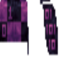
Create Logisticscreate_logistics
该物品需要使用 物品保险库 合成，外观类似于 工具箱 ，可以存放…
Create Mechanical Chickencreate_mechanical_chicken
在机械鸡的底部连接动力，前部输入液体 Seed…
Create More Packages / CComunityBoxesccomunityboxes
Create More Packages 是一个小型的 机械动力…
Create Recycle Everythingcreate_crush_everything
你是否对日复一日地清理你的箱子感到厌烦？这个模组可以让你用 粉碎轮…
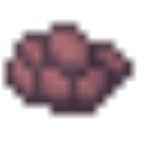
Create: Ad Astra Compatibilitycreate_ad_astra_compat
这个模组添加了 Ad Astra! 中戴斯、紫金和耐热金属的碎矿…
Create: Advanced Logisticscreateadvlogistics
Create: Advanced Logistics…
Create: Create O' Plentycreateoplenty
3 件 BOP 联动配方
Create: High Pressurecreate_high_pressure
这个模组为玩家提供一种 机械动力 的量产路线来可靠地生产 钻石…
Create: Peacefulcreate_peaceful
Create: Peaceful 提供了通过相对和平的方式获取大多数…
Create: Refilling Boxescreate_refilling_boxes
3 件自动补货箱
Create: Superheated
把下界合金丢进岩浆里再升级一次
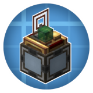
Create Stock Bridgecreatestockbridge
该模组实现了 应用能源 2 与 机械动力 的兼容性联动…
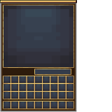
Create: Amazing Tradingamazingtrading
该模组类似于 等价交换重制版 ，添加了 2 台依赖于 RPM…
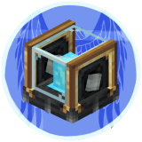
Create: BalancedFlightbalancedflight
2 件飞行配平件
Create: Colored Packagescolored_packages
Create: Colored 旨在为 机械动力 中的多种方块添加变种
Create: Cultivation Craftcreate_cultivation
本模组的核心是 栽培罐 ——一种通过应力驱动…
Create: Missionsmissions
作者希望为服务器的所有者提供更好的方式并为玩家们提供货币…
Create: Pattern Schematicscreate_pattern_schematics
4 件把蓝图变成可复用的图样
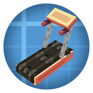
Create: Treadmillcreatetreadmill
跑步机 + 女仆马达，把「走路」变成旋转动力
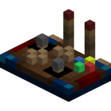
Create: Tweaked Controllerscreate_tweaked_controllers
终于不是6键残疾人了
Fishy Create Stuffsfishycreatestuffs
贯通轴齿轮箱：这个齿轮箱的其中两面由一根轴贯通…
Has Basin Output Faucet Depothasbasinoutputfaucetdepot
Has Basin Output Faucet Depot 附属模组
Ars Creoars_creo
1 件 Ars Nouveau 与 Create 的接口
CBC: Nuclearcbc_nukes
在某个 机械动力：火炮 的 Discord 社区第…
Create Cobblestonecreatecobblestone
Create Cobblestone 是一个机械动力的附属 Mod…
Create Compact Expnocubescreateexp
该模组提供了经验块，由 经验颗粒 打包而成
Create Horse Powercreatehorsepower
Create Horse Power 附属模组
Create Mechanical Extrudercreate_mechanical_extruder
1 件无限刷石机
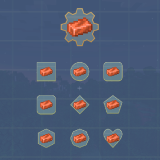
Create Questingcreate_questing
1 件把任务系统接进游戏
Create ReAutomated: Tracescreatereautomatedtraces
ReAutomated 的补充包：更多零件与中间产物
Create: Delivery Director [Discontinued]delivery_director
Create: Delivery Director 是一款专注于为…
Create: Direct Chutedirect_chute
添加一种新型溜槽，无方块实体，无容器槽位…
Create: Eureka!create_eureka
Create: Eureka 是 机械动力 和 Valkyrien…
Create: Feather
Create: Heat Pipe
Create: Leather
Create: Simple Generatorcreate_simple_generator
默认情况下，每游戏刻会消耗 1 点应力（乘以速度系数），并产生 1…
Create: Trading floortrading_floor
1 件自动交易台
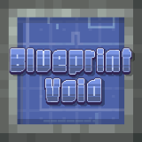
Create：Blueprint Voidbpvoid
类似于原版的结构空位方块，当使用蓝图大炮打印包含该方块的结构时…
Fishing Bobber Detector附属模组
TongDaRailway for Forgetongdarailway_for_forge
此模组是 通达铁路 的 1.20.1 Forge 移植…
Unbreakable Netherite Pickaxeunbreakable_netherite_pickaxe
单件：一把不会坏的下界合金镐
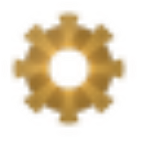
VS: Rotanatorrotanator
VS: Rotanator 附属模组
Create: Ultimate Factorydata/create_ultimate_factory/recipe/
关系
现在 9 个附属模组都直接挂在「机械动力」下面：关系图里从中心拉一条实线过去，点小球（或那条线）进各自的介绍页。
附属模组之间的配方联动（虚线）目前没有核实到，所以关系图上暂时不画。真出现互相加配方的模组时，再补一条虚线。
说明
本体目录只放机械动力的东西；附属模组的物品只出现在它自己的页面里，不会混进本体目录。 以后每加一个附属，这里多一张卡。